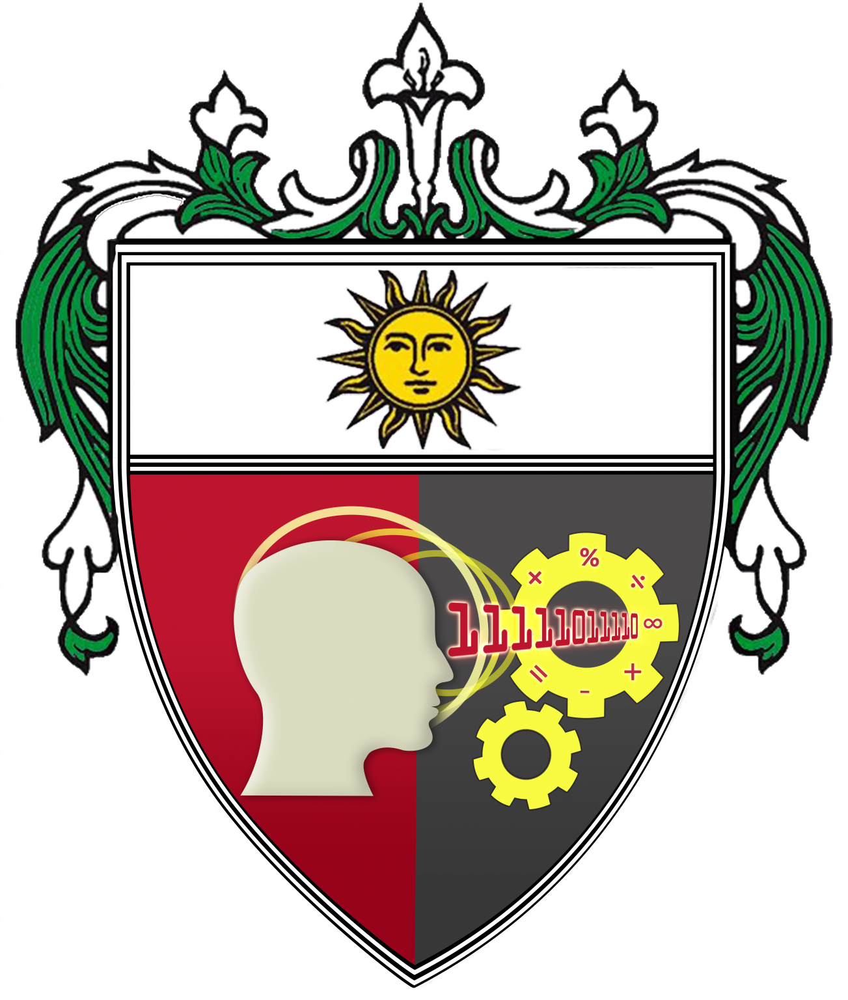

BSIS - 4 YEARS
Bachelor of Science in Information Systems
Aims to prepare students from the ITE programs for a career in Business Analytics by equipping them with the required competencies.

College of Information and Computing SciencesAims to prepare students from the ITE programs for a career in Business Analytics by equipping them with the required competencies.
Aims to train the students to be well versed in the practical and technical know-how of installing, setting-up of computers and computer networks. Special skills taught include troubleshooting and repairing of hardware components.
Trains to study the computing concepts and theories, algorithmic foundations, and new developments in computing. The program prepares its students to design and create algorithmically complex software and develop new and effective algorithms for solving computing problems.
| Program | Abbreviation | Duration | General Focus |
|---|---|---|---|
| Computer Science | BSCS | 4 Years | Computing, algorithms, and computer science |
| Information Systems | BSIS | 4 Years | Technology and business information systems |
| Information Technology | BSIT | 4 Years | Application and management of information technology |
Center of Development recognition for Computer Science, Information Systems, and Information Technology
Level II Re-Accreditation for the three undergraduate programs